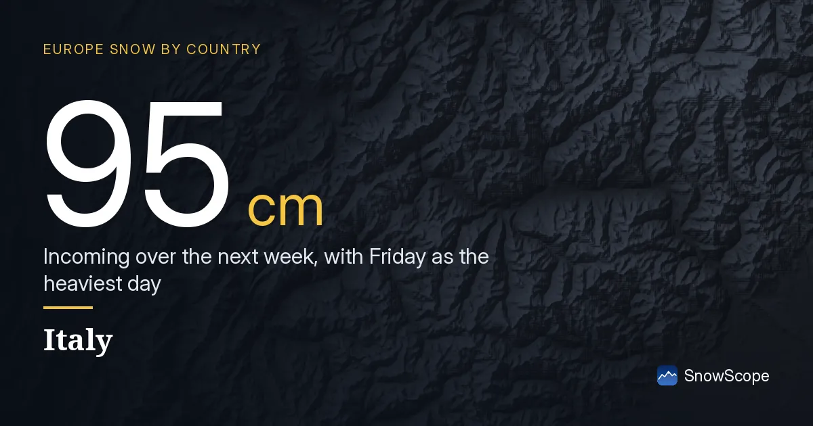
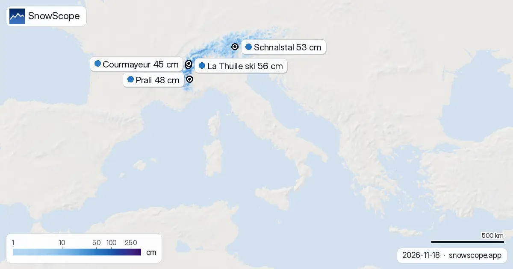

Italy: 95 cm incoming over the next week, with Friday as the heaviest day
A significant winter storm is moving toward Italy. Over the next 7 days, the mountains could see as much as 95 cm of new snow, far more than the typical 44 cm that fell in the past 72 hours.
See the live snow forecast for La Thuile ski in the SnowScope appSnow depth, powder alerts and the 3D map, free.
What's coming: a week of steady snow
The pattern has shifted. After modest snowfall over the past three days (44 cm at peak across the country), our model now tracks a much larger system pushing in. Between now and 25 November, Italy is likely to receive up to 95 cm of new snow at high elevations, with Friday 20 November as the focal point: that day alone could bring 34 cm.
This is the kind of event that changes early-season conditions. The Aosta Valley has already captured 156 cm in 72 hours and stands to gain more. The Piedmont Alps, with 67 cm in the past three days, will see substantial additions. Even areas that have been drier, like the Passo Stelvio region, are in line for heavier falls as the system matures.
| Resort | Snow depth | New snow, 72 h | Coming, next days | Top |
|---|---|---|---|---|
| La Thuile ski | 56 cm | 80 cm | 91 cm | 2,608 m |
| Schnalstal | 53 cm | 10 cm | 16 cm | 3,200 m |
| Prali | 48 cm | 30 cm | 32 cm | – |
| Courmayeur | 45 cm | 74 cm | 96 cm | 2,749 m |
| Passo Stelvio | 38 cm | 8 cm | 16 cm | 3,355 m |

Friday and the following days: the rhythm of the storm
Friday 20 November is the peak intensity day. After that, snow will continue through the week but at a gentler pace. The next three days (19-21 November) could deposit up to 55 cm depending on exact elevation and slope aspect. By contrast, the days after Friday settle into a more typical November rhythm, though our model still flags significant totals.
Timing matters in the mountains. Early morning visibility will be poor on Friday; by afternoon, depending on how fast the system moves, conditions may improve slightly. Plan your approach accordingly if you are heading uphill.

Where the snow hits hardest
The western Alps will capture the bulk of this event. La Thuile ski is forecast to gain 91 cm over three days and already sits on 56 cm measured at mid-November. Courmayeur, with 45 cm on the ground today, should receive 96 cm in the next three days—a doubling of its current base. These are the resorts most directly in the storm's path.
Higher elevations above 2500 m are already well covered (20 cm mean depth, 99 percent snow cover), and they will benefit most. Below 2000 m, snow cover remains patchy and thin (1 cm mean depth between 1500 and 2000 m), so rain-snow transitions and melt remain hazards at lower altitudes and on south-facing slopes.
How this compares to November normal
Early November snow events are not unusual in the Alps, but the volume forecast here is well above median. At Courmayeur, we typically see around 22 cm by mid-November; today's measurement of 45 cm is already 223 percent of normal. La Thuile, at 56 cm, is running at 152 percent of its climatological average for this date. This is a generous start to the season, not an outlier.
The challenge is that the base is still thin at mid-elevations. Rocks and thin patches will remain visible even after Friday's snow, especially on slopes facing south or southeast.
Looking at coverage and snow line
Italy currently has snow on 21 percent of its high ground—about 19,640 km² of the 93,660 km² we monitor. The snow line sits at 1700 m today. After Friday's event, we expect the line to drop and coverage to increase sharply, particularly in the Aosta Valley and Piedmont. By next week, the white share should approach 30-35 percent of the mapped area.
The past week has been volatile. Seven days ago, 21,600 km² were snow-covered; yesterday it dropped to 19,930 km², then recovered slightly to 19,640 km² today. This churn reflects the warm, unsettled pattern that is now breaking. The incoming system marks a genuine seasonal turn.
What to watch and where the prize is
If you are aiming for depth and stability, the western Alps—particularly the Aosta Valley resorts—are your target. La Thuile ski and Courmayeur will be the standouts after Friday. Schnalstal and Passo Stelvio, while in the storm's reach, are receiving less fresh snow (16 cm and 16 cm respectively over three days) because they lie slightly north and east of the heaviest precipitation axis.
The snowiest day for all of Italy is Friday 20 November. That does not mean you can only ski then; Friday is simply when the most snow arrives in a 24-hour window. The whole event spans the week, and Saturday and Sunday may well offer better visibility and easier travel to the mountains, with fresh snow still on the ground and less incoming precipitation.
Tips for skiers
- Target the western Alps (Aosta Valley and Mont Blanc massif) for the most reliable snow depth gains over the next 7 days. The Piedmont Alps will also see heavy falls but slightly less than the westernmost zones.
- Friday 20 November will bring heavy precipitation; plan for poor visibility and avalanche hazard. Check the official avalanche bulletin before heading off-piste, as new snow on steep terrain can be unstable, especially where it bonds to thin old snow below 2000 m.
- Stay above 2000 m where possible. The snow line is currently at 1700 m; lower slopes will see rain-snow transitions and partial melt during the event, particularly on south-facing aspects.
- Friday afternoon may offer better visibility than Friday morning as the system core passes; Saturday and Sunday could be excellent for skiing with fresh snow and clearer conditions.
- Use SnowScope's live map to track the snow line and coverage after Friday to find the best transition between fresh snow and stable base.
About these numbers
Resort snow depths are the deepest snow on the resort's upper slopes from the SnowScope snow model (about 1 km, run of 18 November); they are estimates for an area, not a measurement at one point. Station values are measurements on the date shown. Forecasts can change. Always read the official avalanche bulletin before going off-piste.
Cite this report
For research, teaching or the press: the numbers and charts are free to reuse under CC BY 4.0 with this citation.
SnowScope (2026), Italy: 95 cm incoming over the next week, with Friday as the heaviest day, https://snowscope.app/blog/en/2026/11/italy-snow-on-the-way-18-november-2026.html, accessed 2026-11-18
SnowScope (Atlas Labs). (2026, November 18). Italy: 95 cm incoming over the next week, with Friday as the heaviest day. SnowScope snow reports. https://snowscope.app/blog/en/2026/11/italy-snow-on-the-way-18-november-2026.html
BibTeX
@misc{snowscope2026italysnowontheway18novem,
author = {{SnowScope (Atlas Labs)}},
title = {Italy: 95 cm incoming over the next week, with Friday as the heaviest day},
year = {2026},
month = nov,
howpublished = {\url{https://snowscope.app/blog/en/2026/11/italy-snow-on-the-way-18-november-2026.html}},
note = {Published 2026-11-18 11:13 UTC; accessed 2026-11-18}
}· CC BY 4.0 · Methods, data and tools →
La Thuile ski: snow and temperature by height, this winter vs last (tools) →
Follow La Thuile ski
Free: a message when fresh snow is coming, and the forecast every morning.
More snow reports

Savin Kuk above Žabljak picked up 22 cm of snow from 13 to 19 November and still has 6 cm today. Kolašin 1450 and 1600 are bare. The week day by day, and the next chances.

Up to 30 cm of snow fell on northern Velebit and Bjelolasica on Friday 13 November 2026. By Tuesday it was gone. Day by day, what the mountains kept, and when snow comes back.

Only Borovets and Bansko have a trace of snow at the top today, 2 cm each. A week ago Borovets had 11 cm. Day by day, and the one snowy day in the forecast.